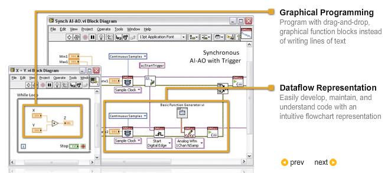

Labview  (april 2009)
(april 2009)
LabVIEW is a graphical programming environment used by millions of engineers and scientists to develop sophisticated measurement, test, and control systems using intuitive graphical icons and wires that resemble a flowchart.
t enables the rapid